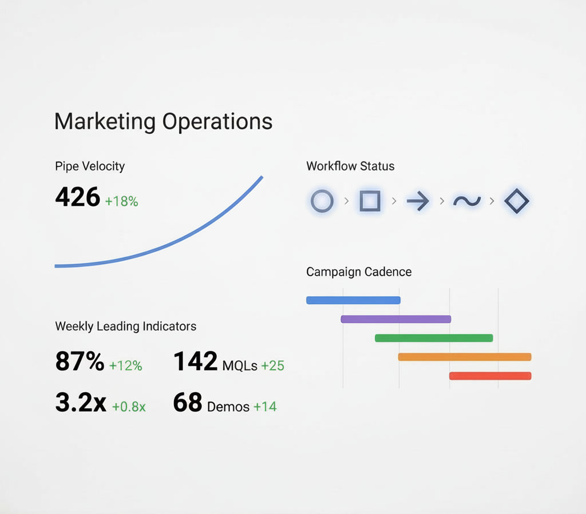

Enter password to continue
Most founder-led B2B companies don't have a marketing problem. They have an operating model problem. We design and install the system that fixes it.
Book a 30 Minute Growth Operating Model Audit →No retainer. No pitch.
THE GAP
78%
of companies with product-market fit still fail to scale
McKinsey research across 3,164 Series A companies.
They have a product customers want. They have revenue. They have ambition. But the way growth work happens inside their company -the handoffs, the dependencies, the founder as single point of approval -creates a ceiling that talent and budget alone cannot break through.
The gap is not strategy. It is not creative. It is not media spend. The gap is the operating model -the invisible system of governance, workflows, and accountability that determines whether any growth investment compounds or collapses.
We exist to close that gap. Not with more campaigns, more tools, or more headcount. With a system design that makes growth work predictable, measurable, and independent of any single person.
SYSTEM INSIGHT
Every founder-led company runs on one of two loops. The first keeps the founder at the centre of every decision. The second builds a self-reinforcing system that compounds. The difference is not effort -it is architecture.
THE FOUNDER BOTTLENECK LOOP
Every decision routes through the founder. Throughput is capped by one person's bandwidth.
THE OPERATING MODEL LOOP
A self-reinforcing cycle where each phase informs the next. The system compounds without founder dependency.
ENGAGEMENT
Three phases. Each with defined deliverables, measurable outcomes, and clear governance. This is a units-based delivery model -not a retainer, not a project with scope creep.
01
WEEKS 1–3
We map the future-state operating model, define governance structures, and architect the system your growth function will run on.
02
WEEKS 4–8
We build the infrastructure, launch initial units of work, and begin generating data against the model. Execution is live, not theoretical.
03
WEEKS 9–12
We optimise based on real performance data, lock in the operating model, and prepare for handover or ongoing governance.
PROOF
20 years of operating model design across HPE, Telstra, Semtech, and 40+ founder-led companies. Every outcome below was delivered through system design -not heroics.

Referral-dependent pipeline
Pipeline source diversity: 15% → 65%
Replaced single-channel dependency with a multi-source pipeline architecture generating qualified opportunities from four distinct channels.
B2B SaaS -Series A
Manual follow-up delayed by hours
Response time: 4.2 hours → 8 minutes
Automation sequences eliminated manual handoffs between marketing-qualified signals and sales follow-up across the entire funnel.
Professional Services -30 FTE
Messaging that drifts by person
Message consistency score: 34% → 91%
A voice system and content governance framework replaced ad hoc messaging with a scalable, auditable brand architecture.
FinTech -Series B
Spreadsheets and gut-feel reporting
Reporting lag: 14 days → real-time
Unified dashboards with leading indicators replaced monthly spreadsheet reviews with live performance governance.
Industrial IoT -Mid-Market
Founder consuming 40–60% of bandwidth
Founder growth time: 55% → 12%
Operating model install transferred decision-making authority to documented governance structures, freeing founder capacity for product and strategy.
B2B Marketplace -22 FTE
All metrics are from real engagements. Company names withheld under NDA. Results vary by organisation maturity, market conditions, and implementation commitment. Past performance does not guarantee future outcomes.
START HERE
This is not a sales call. It is a structured conversation where we map your growth operating model and identify the highest-leverage design changes.
CAPACITY
We work with 4–6 companies at a time. This ensures every engagement receives full system design attention, not fractional oversight.
The audit itself is free and carries no obligation.
APPLY FOR YOUR AUDIT
QUESTION 1 OF 8
QUESTION 2 OF 8
QUESTION 3 OF 8
QUESTION 4 OF 8
QUESTION 5 OF 8
QUESTION 6 OF 8
QUESTION 7 OF 8
QUESTION 8 OF 8
We review every submission within 48 hours. If there's a fit, we'll schedule your 30-minute architecture session directly.
FAQ
We understand. Most agencies sell execution hours without system accountability. Our model is different -we install an operating model with documented governance, measurable outcomes at every phase, and a defined exit. You own the system. There is no dependency on us to keep it running. If we haven't built something your team can operate independently by week 12, we haven't done our job.
You can -and eventually you should. The operating model we install is designed to be run by your team. The question is whether you have the 12 weeks and system design expertise to build it from scratch while simultaneously running the business. Most founders find that bringing in a specialist to design and install the system, then handing it over, is faster and more reliable than building it in parallel with everything else.
If your conversion infrastructure, follow-up systems, and pipeline governance aren't built to handle and convert leads at scale, more leads will just expose the gaps faster. We've seen companies triple their lead volume only to see close rates drop because the operating model couldn't absorb the increase. We start with the system -then scale the inputs. The leads follow the architecture, not the other way around.
Every automation we install comes with governance -approval workflows, escalation rules, and human-in-the-loop checkpoints where they matter. We don't replace judgement with automation. We use automation to eliminate repetitive manual steps so your team can focus their judgement where it creates the most value. Data handling follows your existing compliance requirements and we document every integration point.
A strategy consultant gives you a document. A fractional CMO gives you part-time oversight. Neither gives you a functioning system. We design, build, and install the operating model -then hand over a live, documented, measurable growth function your team can run. The output isn't a strategy deck. It's infrastructure -campaigns running, automations live, dashboards reporting, governance in place, and team playbooks locked in.
NEXT STEP
CONTACT
Have a question or want to start a conversation? Reach out directly or send us a message.
SEND A MESSAGE
Thanks for reaching out. We'll get back to you shortly.